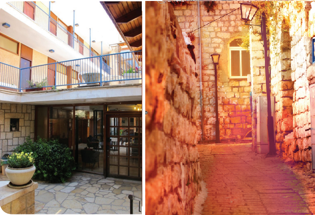

The Entire Torah on One Tour
Mrs. Chaya Bracha Leiter, shlucha at Machon Ascent, teacher, spiritual adviser and tour guide, takes us back to the beginning and the brachos she and her husband merited to receive from the Rebbe. She describes her unique work and highly recommends that other Chabad Houses use a similar formula by using leisure time experiences to deliver Jewish content .
By Devorah Leah Halperin

The visitors who come to them include Israeli tourists, students from the military academies, Birthright groups from abroad, soldiers and IDF officers as part of an officers’ course and a Shabbos Chinuch, hi-tech companies, labor groups, students, tourists from abroad and others.
We spoke to the spirit behind Ascent, Mrs. Chaya Bracha Leiter, a baalas teshuva from Colorado, mother of eleven children, who made aliya with her husband, Shaul, in 5743/1983. Together with others, they founded the Machon whose goal is to spread p’nimius ha’Torah in a language that is inviting to the larger public and attracts tourists from around the country and the world.
The place was first called “Machon L’Darchei HaChassidus,” the point being to introduce Judaism and Chassidus to tourists through the Chassidic experience, with less emphasis on the academic side of things. When they moved to a different building, the name was changed to something less “scary” – Ascent.
Ascent is located on Rechov HaAri in old Tzfas, on a corner that overlooks the panoramic vistas of Tzfas. The place hums with visitors and operates all week long, hosting groups that by now, numbers in total in the tens of thousands of people.
“In the early years, we organized summer programs and then started organizing even shorter programs, like week-long programs and weekends. For many years, my job was to arrange everything, from planning to execution. Today, my job is giving lectures, running workshops and tours and hosting. At first, the programs focused exclusively on English-speakers. Today the programs are held in all languages.”
Every evening there are various Torah classes and a few times a month there are seminars or experiential weekends that include workshops, tours and shiurim. Ascent also maintains HaBayit B’Tzfat, which previously served as the Tel Aviv Hotel. Participants of the encounters and the shiurim enjoy the low-cost accommodations.
ENCOURAGEMENT FROM THE REBBE
“My husband observed that we were working primarily with English-speakers and considered whether we ought to move to a place where most people speak English. When he wrote to the Rebbe, the answer was: onward, continue in Tzfas.
“That is when we officially began. A year later, the Rebbe wrote to my husband and to the couples that worked with us, ‘Activities like these are important; all the more so in the holy land; all the more so in Tzfas, the holy city. Being that we are coming from Parshas Yisro where ‘naaseh v’nishma’ is emphasized, however, activities which are done with joy and enthusiasm are more successful.’”
Whoever talks with Mrs. Leiter, immediately observes the fulfillment of the Rebbe’s instructions and the actualization of what he said, “activities which are done with joy and enthusiasm are more successful.” It’s all done with joy. Likewise, in Tzfas the air and atmosphere create a certain openness and receptivity and generate friendly feelings and increased intensity.
THE CHASSIDIC EXPERIENCE
“The first program we ran was for students who were in Eretz Yisroel. A shiur in Chassidus is an activity that provides only a partial picture of the Chassidic experience. At Ascent, we try very hard to give a full picture of Chassidic life, so our program includes being hosted by a family Friday night and helping prepare the Shabbos meals.
“Our shlichus is in Tzfas and as part of this, we get our guests acquainted with the area, with the Ari’s mikva and grave, through which we transmit to them information about the Arizal and kabbala. We also visit the grave of R’ Yosef Karo and as part of the tour we explain the development of the Shulchan Aruch. We do a nature tour to Rashbi, to Rabbi Yehuda bar Ilai, to Yonasan ben Uziel or Rosh Pina. There are also some students of the Baal Shem Tov buried here and so we teach and tell about him and his approach in an experiential way that will make a deep impression on the visitors.
“Our programs, between the week-long seminars and the weekends, combine body and soul. The programs include music workshops, meditation, crafts such as making a candle, baking with interesting types of dough from various kinds of flour, a workshop on health according to Torah, and tours. Our workshops are developed so as to fully engage the participants. In the learning part of the program, we incorporate brainstorming and discussions.
“In Tzfas there is an Artists’ Colony and we do workshops called ‘Art and Judaism,’ in which we take an academic subject and examine it and express it in art.
“One of our big programs is before 5 Av. We arrange five days of touring and learning about the students of the Ari, kabbala and Chassidus, along with nature tours. We learn and sing niggunim and go down to the Arizal’s grave. These programs expose the visitors to many insights.
“I used to run a program called ‘Soul Trek,’ which was a hike for three days in the Galil and the Golan. Naturally, the trip included lots of stories and laughter. At every stop I told part of a Baal Shem Tov story, in installments. I taught a maamer Chassidus and we did a meditation about what we learned. I included all the possible brachos we could say on fragrances and fruits we came across. I taught the significance of a bracha and explained the words and the order of brachos. When learning is experiential, nobody feels coerced. It’s all done with the joy and pleasure of an outing.”
WORLDWIDE CENTER
“Many shluchim send us their mekuravim for seminars and rely on us to arrange a suitable program. It helps them afterward in developing the continued growth of the mekuravim. My favorite part of shlichus is Ascent’s being a center of connection between the visitors and Chabad Houses around the world. I love welcoming Jews from all over the world with shluchim referring people to us. We also get tourists after their trip to the Far East or mekuravim whose shluchim told them to visit us. We do the same thing in reverse. Whoever leaves Ascent, gets details from us about the shliach in their city and we ask them to give regards to our friend there. So the connection is ongoing. Many of the shluchim in the East learned from us how to run experiential workshops in nature and also come to us with their mekuravim for a Shabbos, when they are in the country.
“Many Birthright tourists, when asked which place they enjoyed the most, answer Tzfas. It’s interesting because only three hours out of their entire trip are devoted to Tzfas. When asked why, they explain, ‘It’s the most authentic.’ Tzfas is a small city which contains a lot, generations upon generations, and has not lost its charm and authenticity. And yet, on some level, it has remained a small town. In this city, there is an emphasis on social bonds, Ahavas Yisroel and mutual help; it doesn’t really matter who you are.”
THE HIDDEN GOOD
“One Shabbos, I walked into Ascent and met a girl who came from India, not through a Chabad House. At first I was taken aback by her appearance. She had earrings and bracelets in every possible place, was wearing a sari, without shoes, and she had a bird’s nest in her Rasta braids. I immediately exited and prayed to Hashem that I be successful in reaching her. I got up my strength and went back in and said, ‘Hello, welcome.’
“I noticed that beneath her costume there was a girl with wise eyes, a refined soul, and charm. She held a violin, so I suggested that when Shabbos was over, when the women gathered and sang, that she say ‘boruch ha’mavdil’ and play for us.
“On Motzaei Shabbos she played beautifully, and something began to change in her. I saw that she had many questions and things she wanted to clarify, and I suggested that she stay with us and study, but she said that she couldn’t. She came the following Shabbos and the Shabbos after that.
“Then we had the program that we do for 5 Av, one of our biggest of the year. Part of the program is a tour to the grave of the Ari. On the way, I gave her a hand and quietly taught her, again and again, the niggun Hisorerus Rachamim Rabbim of R’ Yechiel Michel of Zlotchov, a student of the Baal Shem Tov. I told her the known tradition that when he passed from this world, the Baal Shem Tov asked his students to sing this niggun and promised that anybody who sings this niggun with an arousal of repentance at any time, he will join in with his soul and arouse great mercy before Hashem.
“The niggun is not easy to learn but she caught on quickly and continued singing it to herself. The niggun affected her deeply. At 2:00 in the morning I left her after we spoke a long time. The next day I heard from other women that she sat with them until dawn … She eventually started getting closer and became a baalas teshuva and today is a Chassidic woman, a mother of seven.
“What is special about this story is that my first sight of her was a turn-off. It was the first time I had seen ‘Rasta braids.’ Her layers of clothing were dirty. But when I focused on her p’nimius, I discovered such a precious treasure and merited to draw her close to the light of Chassidus.”
RECOMMENDATION FOR MY FELLOW SHLUCHOS
“I recommend to shluchos worldwide to make greater use of leisure times to communicate Judaism and Chassidus. Experiential activities for the larger public, especially in nature, enables you to offer a quality time for both body and soul. Operating programs during leisure times and the tours which I call ‘education through tourism,’ are very powerful and impactful.
“For example, you can have a discussion about the faculty of sight. Give out cellophane sheets in different colors to the participants and they’ll see how everything depends on one’s perception of things. Part of the moral lesson is to look positively at every Jew, and so much more. In an encounter in nature and a walking tour you can have open personal discussions with participants, far more easily than during a shiur because the air and atmosphere are conducive. In places like this, everything opens up and conversations with mekuravim become deeper and brings them another step forward toward the Geula.”
Beis Moshiach (staff). "The Entire Torah on One Tour." Beis Moshiach, no. 1139 (October 31, 2018).